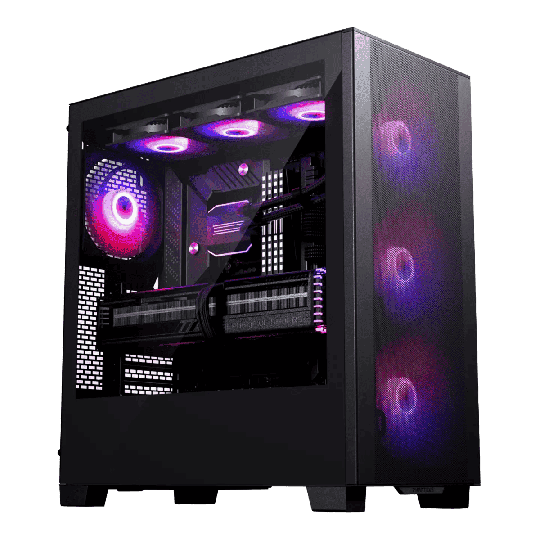

3BComputer – spolehlivý partner pro vaše IT a internet

3BComputer s.r.o. – odborníci na IT a internet ve Svitavách. Pomůžeme s počítači, internetem i servisem notebooků.
O nás
Lokální IT firma ze Svitav zaměřená na prodej a servis techniky. Rychlá pomoc a srozumitelný přístup.
Nabídka
Servis počítačů, připojení k internetu a moderní komunikační služby na jednom místě. Postaráme se o techniku, aby fungovala a neotravovala vás.
Akce
Podporujeme místní projekty, školy a aktivity pro děti v regionu. Spojujeme techniku se vzděláváním a smysluplnou pomocí.
Kontakt
Kontaktujte nás osobně ve Svitavách nebo telefonicky. Jsme rychle dostupní.